Étude Statistique
Introduction
Notre étude portera sur la place des écrans dans notre
quotidien. Aujourd'hui les écrans font partie intégrante de
notre quotidien, c'est pourquoi nous avons choisi ce thème
pour notre dossier statistique. Nous traiterons des
dépendances au numérique mais aussi de la sécurité notamment
avec l'émergence des réseaux sociaux.
En effet, toutes les nouvelles technologies ont créé un
problème d'addiction auprès de différents profils, nous
étudierons donc tout cela au cours de notre dossier.
Sommaire
Questionnaire
- Quel est votre sexe ?
- Quel âge avez-vous ?
- Combien de temps passez-vous sur votre téléphone chaque jour ?
- Combien de temps passez-vous sur un ordinateur/tablette chaque jour ?
- Combien de livres lisez-vous par mois ?
- A quel âge avez-vous obtenu votre premier appareil ?
- Combien d’objets connectés avez-vous (familiaux compris) ?
- Quels réseaux sociaux utilisez-vous ?
- Combien d’adresses mail utilisez vous ?
- Comment estimez-vous votre rapport aux objets connectés ?
- Vous estimez-vous en sécurité sur le Web ?
- Avez-vous déjà été harcelé ou dérangé par le comportement de certaines personnes sur Internet ?
- Pourriez-vous vous passer d’un téléphone ?
- Pourriez-vous vous passer d’un ordinateur ?
Réponses
Profil des individus interrogés
Sexe :
Nous avons interrogé 202 personnes, sur ces 202 personnes, 58.6% sont des femmes tandis que 41.4% sont des hommes. 3 personnes n’ont pas répondu à cette question. Ici la variable est qualitative.
Âge : diagramme en barre
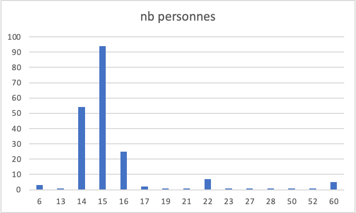
Nous avons interrogé 202 personnes, 4 personnes n'ont pas donné leur âge, sur ces 202 personnes, 94 personnes ont 15 ans, 54 personnes ont 14 ans et 25 personnes ont 16 ans, le reste ont entre 17 ans et plus de 60 ans, cela représente 14,8 % des personnes interrogées. Ici la variable est quantitative et continue. Ainsi notre étude touche en majorité la technologie dans le quotidien des adolescents et préadolescents et en petite partie les jeunes adultes et adultes.
Nombre d'objets connectés
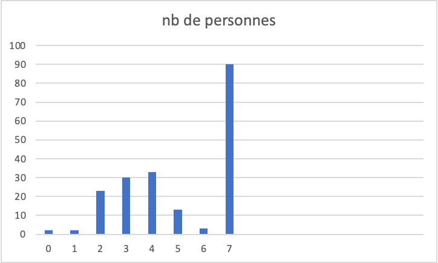
Nous avons interrogé 202 personnes, 6 personnes n'ont pas répondu à cette question, sur ces 202 personnes, 2 personnes ont 0 appareil connecté, 2 personnes ont 1 appareil connecté, 23 personnes ont 3 appareils connectés ans, 30 personnes ont 4 appareils connectés, 33 personnes ont 5 appareils connectés, 13 personnes ont 6 appareils connectés, 3 personnes ont 6 appareils connectés et 90 personnes ont plus de 7 appareils connectés. Ici la variable est quantitative et discrète. Nous pouvons voir qu'une majorité des personnes interrogées possède et utilise des appareils connectés mais que très peu n’en possède pas (seulement 2 personnes).
Âge lors de l’obtention du premier appareil connecté : histogramme et mode
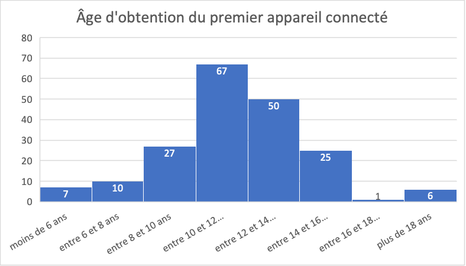
Nous avons interrogé 202 personnes, 9 personnes n’ont pas répondu à cette question. Sur ces 193 personnes ayant répondu, 7 ont obtenu le premier appareil connecté à moins de 6 ans, 10 entre 6 et 8 ans, 27 entre 8 et 10 ans, 67 entre 10 et 12 ans, 50 entre 12 et 14 ans, 35 entre 14 et 16 ans, une personne entre 16 et 18 ans et 6 personnes à plus de 18 ans. Ici la variable est quantitative et discrète. Le mode de cette série statistique est la classe entre 10 et 12 ans pour l’obtention du premier appareil connecté. Nous pouvons ainsi remarquer que au début de l’enfance d’un enfant très peu possède un appareil connectés c’est seulement à partir de la fin du primaire que cela se diversifie. Mais la plus grande différence se remarque au collège où une majorité des élèves obtiennent leur premier appareil connecté.
Temps consacré au numérique
Le temps quotidien sur un téléphone : histogramme, moyenne, médiane, quartiles
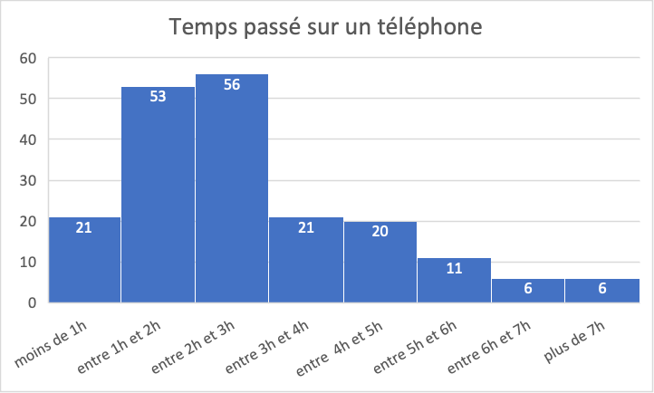
Nous avons interrogé 202 personnes, 8 personnes n’ont pas répondu à cette question. Sur ces 194 personnes ayant répondu, 21 passent moins d'une heure par jour sur leurs téléphones, 53 passent entre 1h et 2h par jour, 56 entre 2h et 3h, 21 entre 3h et 4h, 20 entre 4h et 5h, 11 entre 5h et 6h, 6 entre 6h et 7h et 6 passent plus de 7h. Cette série est quantitative et continue.
Moyenne

En moyenne, les personnes interrogées passent 2,8 heures par jour sur leur téléphone.
Médiane
M=[x(N/2);x(N/2)+1]=[2,5;2,5] donc M=(2,5+2,5)/2=2,5
La Médiane de la série est de 2,5h ce qui signifie qu’au moins 50% des personnes interrogées passent 2,5h par jour sur leur téléphone.
Quartiles
Q1 = (1/4)*N = (1/4)*194 = 49
Donc Q1 correspond à la 49e valeur de la série : 1,5 h. Ainsi 1,5 h est la plus petite valeur de la série telle qu’au moins ¼ des réponses lui sont inférieures ou égales.
Q3 = (3/4)*N = (1/4)*194 = 146
Donc Q3 correspond à la 146e valeur de la série : 3,5 h. Ainsi 3,5 h est la plus petite valeur de la série telle qu’au moins ¾ des réponses lui soit inférieures ou égales.
Nous pouvons voir que sur les personnes interrogées très peu de personnes passent peu de temps voir pas du tout sur un téléphone. En effet, la moyenne de temps passé sur un téléphone chez les personnes interrogées est de 2,8h ce qui est assez important et peut conduire à un problème de dépendance qu’on étudiera un peu plus tard dans l’étude.
Le temps quotidien sur un ordinateur : histogramme, moyenne à partir des fréquences, médiane, quartiles
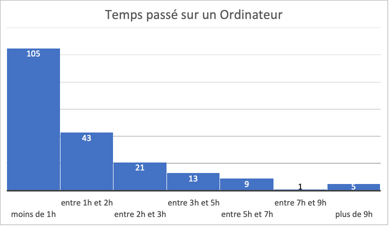
Nous avons interrogé 202 personnes, 5 personnes n’ont pas répondu à cette question. Sur ces 197 personnes ayant répondu, 105 passent moins d'une heure par jour sur leurs ordinateurs, 43 passent entre 1h et 2h par jour, 21 entre 2h et 3h, 13 entre 3h et 5h, 9 entre 5h et 7h, 1 entre 7h et 9h, 6 entre 6h et 7h et 5 passent plus de 9h. Cette série est quantitative et continue.
Moyenne
x = 105/197 + (43/197)*1.5 + (21/197)*2.5 + (13/197)*4 + (9/197)*6 + (1/197)*8 + (5/197)*9 = 1.9
En moyenne, les personnes interrogées passent 1,9 heures par jour sur leurs ordinateurs.
Médiane
M = x(N+1/2) = x(197+1/2) = x(198/2) = 1
La Médiane de la série est de 1h ce qui signifie qu’au moins 50% des personnes interrogées passent une heure voire moins d’une heure par jour sur leur ordinateur.
Quartiles
Q1 = (1/4)*N = (1/4)*197 = 49.5
Donc Q1 correspondà la 49e valeur de la série : 1h
Ainsi, 1h est la plus petite valeur de la série telle qu’au moins ¼ des réponses lui sont inférieures ou égales.
Q3 = (3/4)*N = (3/4)*197 = 147.75
Donc Q3 correspond à la 147e valeur de la série : 1,5 h
Ainsi 1,5 h est la plus petite valeur de la série telle qu’au moins ¾ des réponses lui soit inférieures ou égales.
Nous pouvons voir que sur les personnes interrogées très peu de personnes passent beaucoup de temps voir pas du tout sur un ordinateur. En effet, la moyenne de temps passé sur un téléphone chez les personnes interrogées est de 1,9h ce qui est inférieur à la moyenne nationale qui est de 3h et 25 min. (source Insee)
Les réseaux sociaux utilisés : diagramme en barre
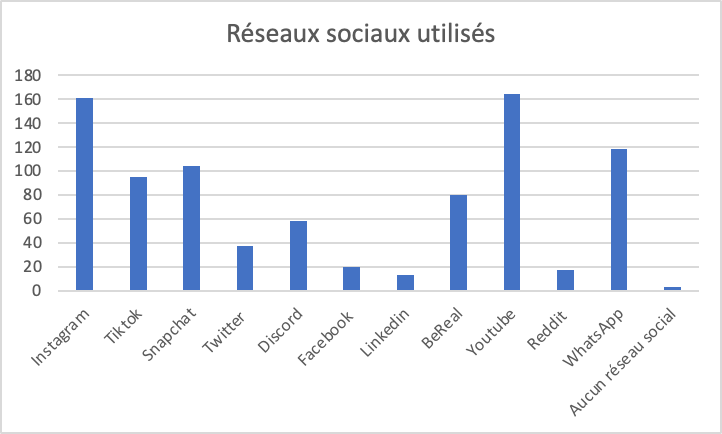
Nous avons interrogé 202 personnes, 2 personnes n’ont pas répondu à cette question. Sur ces 200 personnes interrogées, 3 seulement n’ont pas de compte sur un réseau social. Cela nous montre bien notamment la présence des jeunes sur les réseaux sociaux et leur impact sur le temps d’utilisation de leur appareils connectés.
Nombre de livres lus par mois : polygone des effectifs cumulés croissants, mode
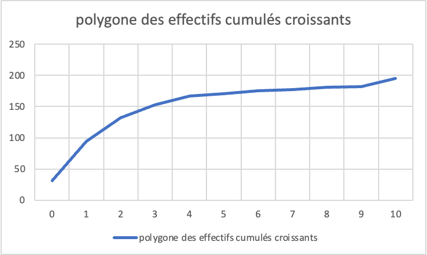
Nous avons interrogé 202 personnes, 7 personnes n’ont pas répondu à cette question. Sur ces 195 personnes, 31 ne lisent aucun livre, ce qui correspond à 15% de la série. Par contre, le nombre de livres que le plus de personnes lisent par mois est de 1 livre. 1 livre est donc le mode de la série.
Dépendance
Estimation par rapport à la dépendance : moyenne, médiane, quartiles, étendue, écart-type
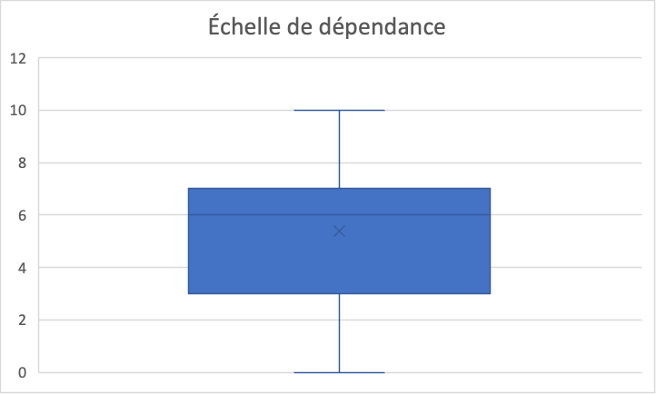
Nous avons interrogé 202 personnes, 3 personnes n’ont pas répondu à cette question. Cette série est discrète. Grâce à ce diagramme en boîte nous savons que :
- La médiane de la série est de 6
Ainsi, au moins 50% des personnes interrogées ont répondu 6 ou plus sur l’échelle de dépendance face aux objets connectés.
- La valeur minimale de la série est de 0
- La valeur maximale de la série est de 10
- Le 1er quartile de la série est de 3
Ainsi 3 est la plus petite valeur de la série telle qu’au moins ¼ des réponses lui sont inférieures ou égales.
- Le 3e quartile de la série est de 7
Ainsi 7 est la plus petite valeur de la série telle qu’au moins ¾ des réponses lui soit inférieures ou égales.
- L’écart interquartile est de 4
- L’étendue de la série est de 10
- L’écart-type de la série est :
- La moyenne de la série est :
Ainsi l’écart type n’étant pas très élevé on peut en déduire que la série n’est pas très dispersée.
Dépendance aux téléphones portables : diagramme circulaire, fréquences
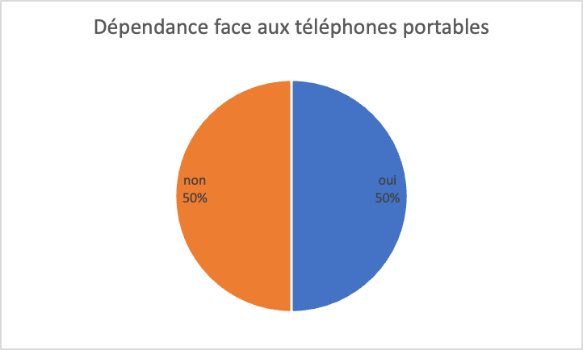
Nous avons interrogé 202 personnes, sur ces 202 personnes 50% se perçoivent dépendant à leur téléphone portable tandis que 50% ne s’en trouvent pas dépendant.
Ainsi la moitié des personnes interrogées pensent qu’ils pourraient se passer d’un téléphone, l'autre moitié pensent qu’ils ne pourraient pas se passer de leur téléphone portable.
Dépendance aux ordinateurs : diagramme circulaire, fréquences
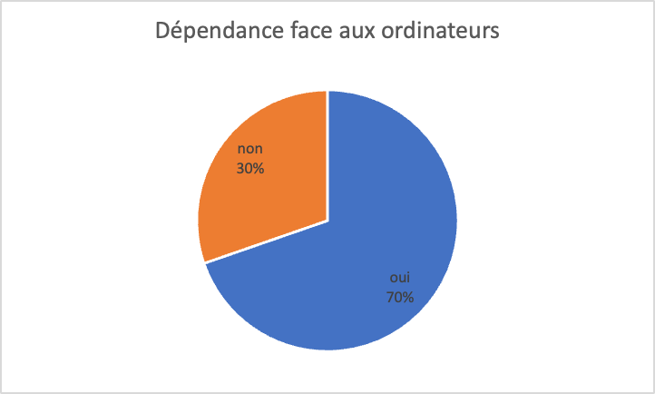
Nous avons interrogé 202 personnes, sur ces 202 personnes 198 ont répondu, 70% ne se perçoivent pas dépendant à leur ordinateur tandis que 30% s’en trouvent dépendant.
Ainsi un tier des personnes interrogées pensent qu’ils ne pourraient pas se passer d’un ordinateur, le reste pourrait s’en passer
Risques et sécurité
Estimation de la sécurité sur le web : diagramme en boîte, moyenne, médiane, quartiles, étendue, écart-type
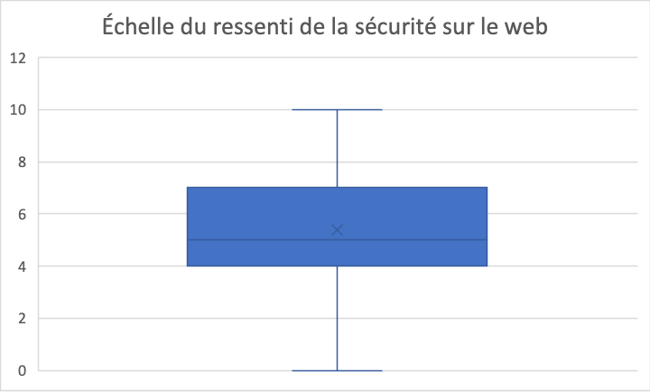
Nous avons interrogé 202 personnes, 7 personnes n’ont pas répondu à cette question. Cette série est discrète. Grâce à ce diagramme en boîte nous savons que :
- La médiane de la série est de 5
Ainsi, au moins 50% des personnes interrogées ont répondu 5 ou plus sur l’échelle du ressenti de leur sécurité sur le web.
- La valeur minimale de la série est de 0
- La valeur maximale de la série est de 10
- Le 1er quartile de la série est de 4
Ainsi 4 est la plus petite valeur de la série telle qu’au moins ¼ des réponses lui sont inférieures ou égales.
- Le 3e quartile de la série est de 7
Ainsi 7 est la plus petite valeur de la série telle qu’au moins ¾ des réponses lui soit inférieures ou égales.
- L’écart interquartile est de 3
- L’étendue de la série est de 10
- L’écart-type de la série est :

- La moyenne de la série est :
Ainsi l’écart type n’étant pas très élevé on peut en déduire que la série n’est pas très dispersée.
Victime de harcèlement sur internet : diagramme circulaire
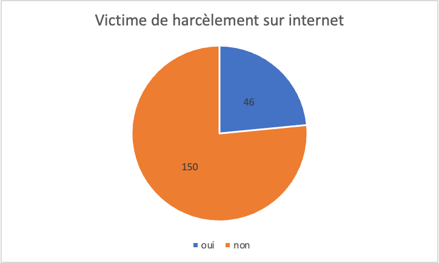
Nous avons interrogé 202 personnes, 6 personnes n’ont pas répondu à cette question. Sur ces 196 personnes 46 sont victimes de harcèlement ou ont déjà été victime de harcèlement sur internet et 150 n’ont jamais été victime. Cela est assez inquiétant étant donné qu’environ ¼ des personnes interrogées ont déjà été victimes de harcèlement.
Nombre d’adresse mail utilisées : diagramme circulaire
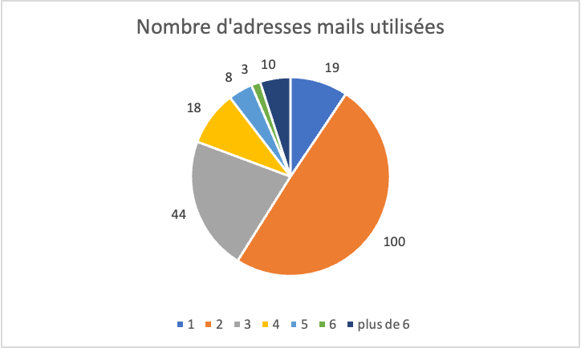
Nous avons interrogé 202 personnes. Sur ces 202 personnes, 100 ont au moins 2 adresses mail et 18 ont 4 adresses mails, personne n’a aucune adresse mail, ce qui est logique car on a envoyé le questionnaire par mail.
Conclusion
En conclusion, cette étude statistique sur l'utilisation des écrans dans notre quotidien a mis en lumière l'importance croissante de ces dispositifs technologiques dans nos vies. Les résultats ont montré que la majorité des personnes passent plusieurs heures par jour devant un écran, que ce soit pour travailler, se divertir ou communiquer. Cette tendance est particulièrement préoccupante chez les jeunes, qui semblent être les plus exposés aux écrans et à leurs effets néfastes sur la santé mentale et physique. Ces résultats soulignent donc la nécessité d'une prise de conscience collective sur l'utilisation excessive des écrans et sur les risques associés. Il est essentiel de trouver un équilibre entre l'utilisation des écrans et d'autres activités plus saines pour notre bien-être mental et physique. Enfin, ces résultats peuvent servir à promouvoir une utilisation responsable et équilibrée des écrans dans notre société.
Travail réalisé par Théophane PEAUCELLE, Christophe SHARAIHA, Tanguy RACCAPE, François DURAND-PIERRE